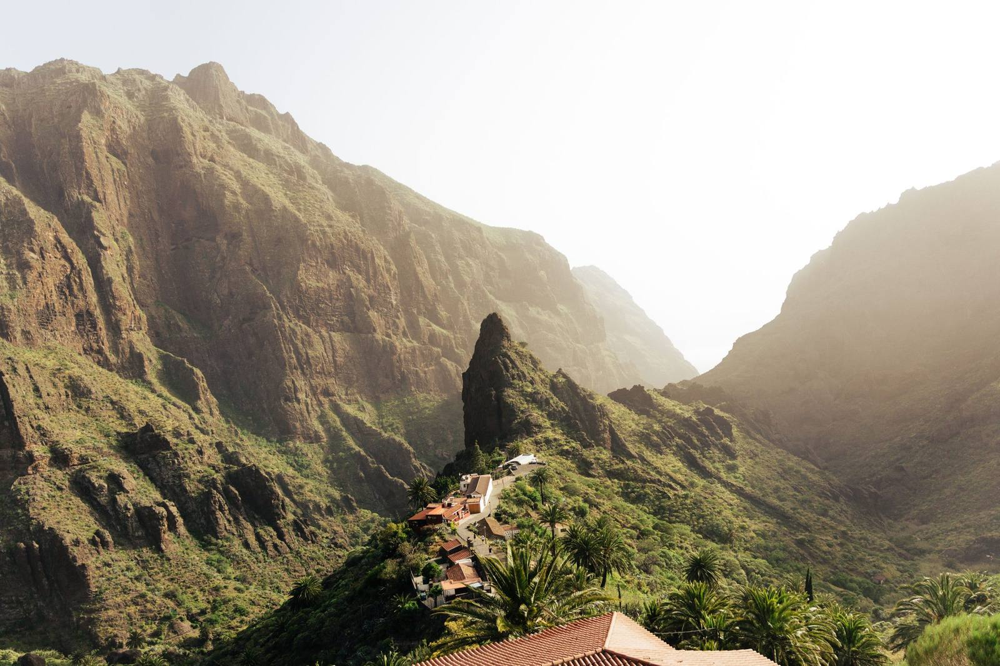
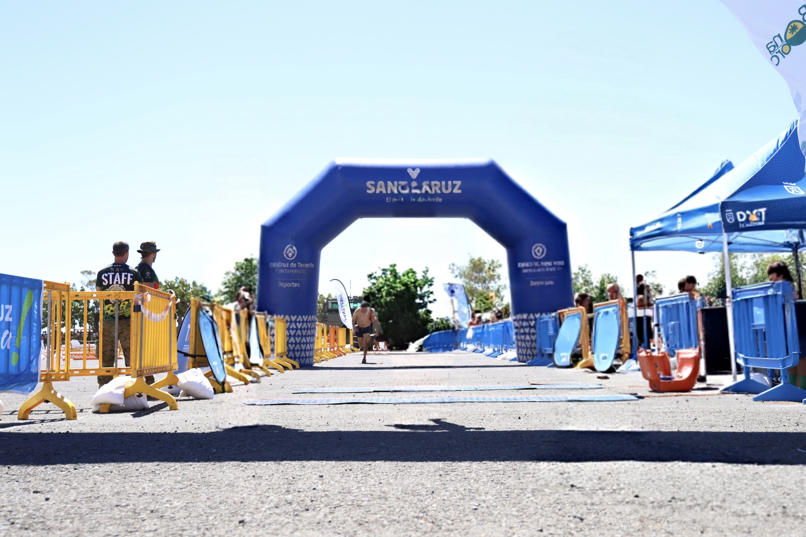
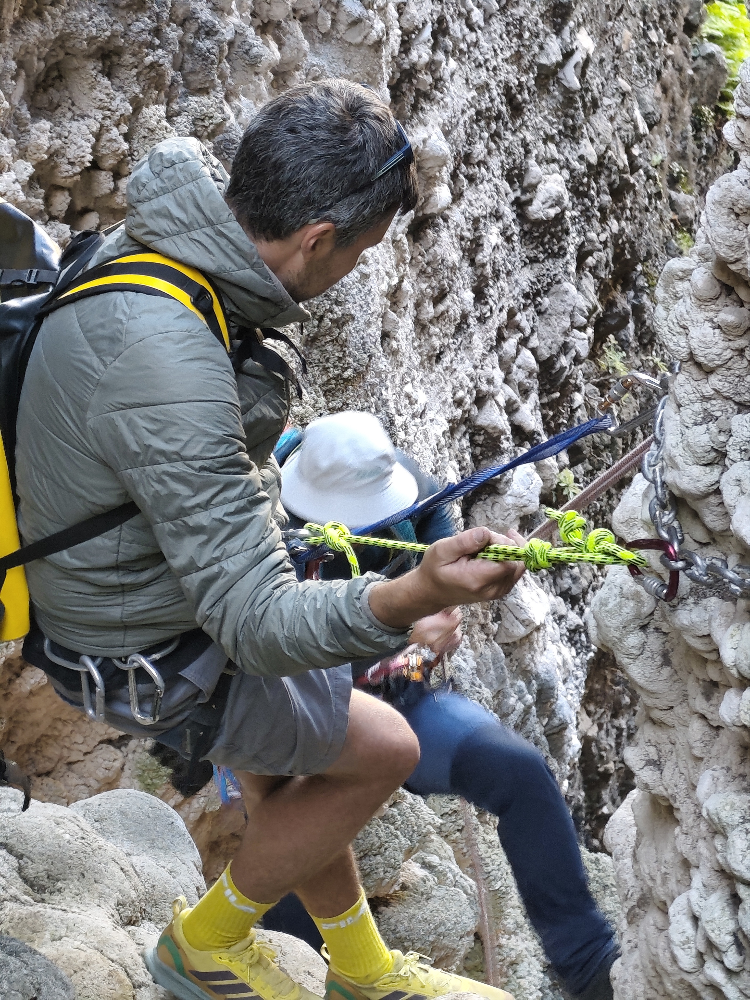
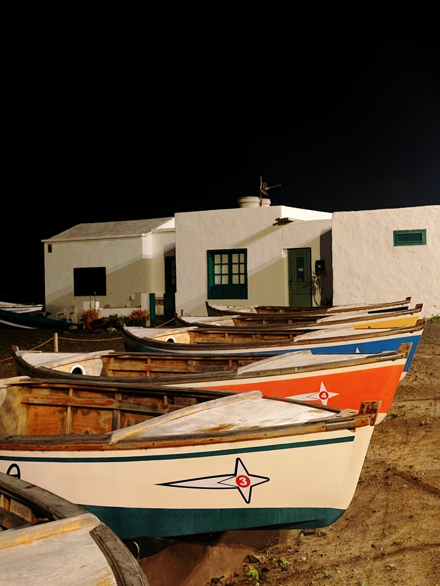
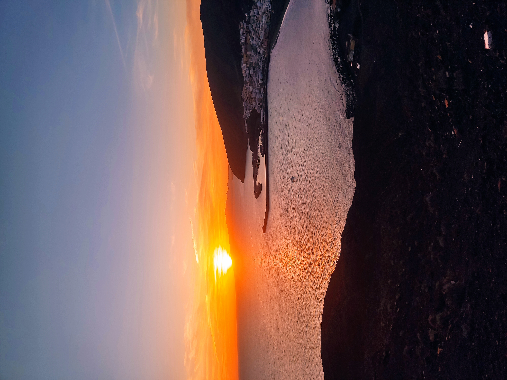
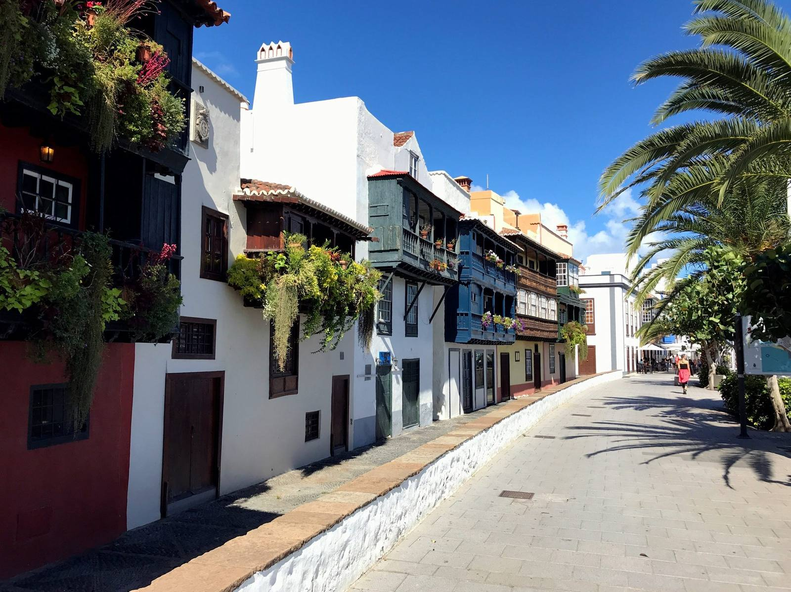
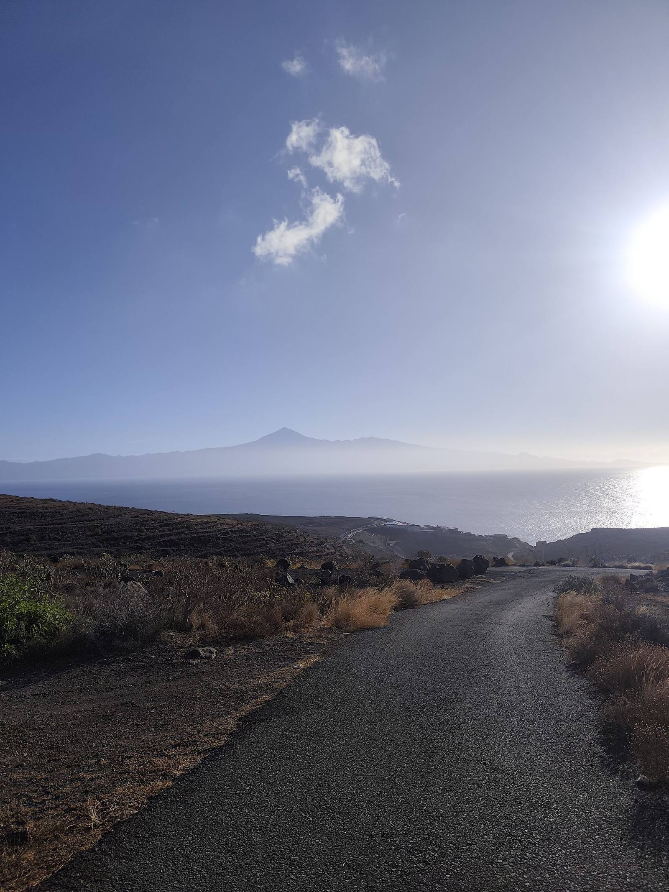
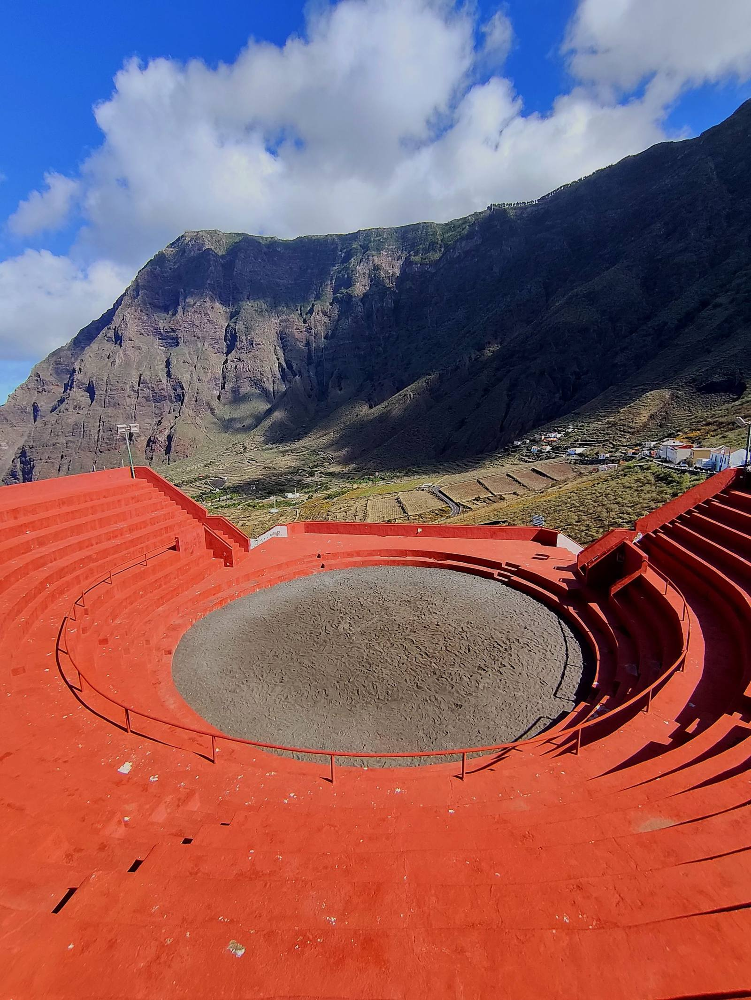
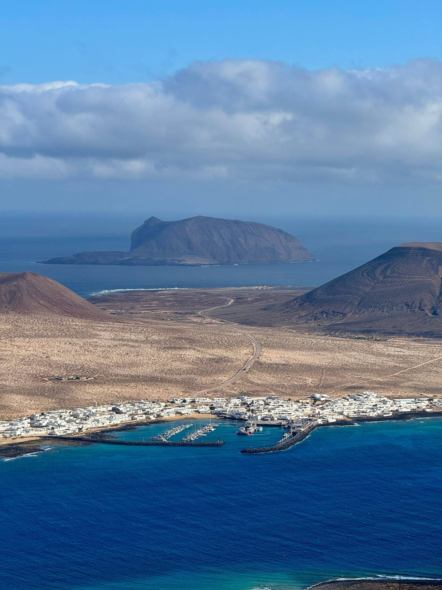

333 rutas.
9 islas. 0 euros.
Desde el Teide hasta el fondo del mar. Senderismo, kayak, buceo, trail y mucho más en el archipiélago más aventurero de Europa.
Explorar rutas
Todo lo que necesitas para tu aventura
Las herramientas mas completas para aventureros en Canarias — todas gratis
Buscador de Rutas
Filtra por isla, deporte, dificultad y duración. GPS verificado en todas las rutas.

Ruleta de Aventuras
Sin ideas? Elige filtros y la ruleta te lanza una ruta sorpresa entre 333 opciones.

Comparador de Islas
6 preguntas y te decimos qué isla de Canarias encaja mejor con tu perfil aventurero.

Calendario de Eventos
107 eventos outdoor verificados en Canarias para 2025-2027. Trail, triatlón, kayak y más.

Tiendas Outdoor
Directorio de 54 tiendas de equipamiento, alquiler y reparación en todas las islas.

Blog de Aventuras
Guías, consejos, equipamiento y los mejores destinos outdoor contados por aventureros.
Elige tu isla y empieza a explorar
333 rutas repartidas en 9 islas — cada una con su caracter unico

Tenerife
El Teide, Anaga y Masca
29 rutas
Gran Canaria
Roque Nublo y Güigüi
29 rutas
Lanzarote
Timanfaya y volcanes
28 rutas
Fuerteventura
Dunas y kitesurf
30 rutas
La Palma
Transvulcania y laurisilva
30 rutas
La Gomera
Garajonay UNESCO
30 rutas
El Hierro
100% renovable y buceo
30 rutas
La Graciosa
Sin asfalto ni masas
15 rutas
Isla de Lobos
Snorkel virgen
15 rutasCual es tu deporte?
Filtra las rutas por el deporte que mas te gusta
Ultimos articulos
Guias, consejos y rutas para sacar el maximo a tu aventura en Canarias
Trail Running en Canarias 2026: Las 10 Rutas Mas Epicas
Transvulcania, Bluetrail, Anaga y mas. Las mejores rutas para corredores de todos los niveles.
Leer articulo -> TenerifeGuia Completa para Subir al Teide a Pie
Todo lo que necesitas saber para coronar el punto mas alto de Espana desde el suelo.
Leer articulo -> AcuaticoLos 12 Mejores Spots de Buceo y Snorkel en Canarias
El Hierro, el Cabron, La Graciosa y mas. Los mejores fondos marinos del archipielago.
Leer articulo ->Listo para tu proxima aventura?
333 rutas verificadas esperando. Encuentra la tuya en menos de un minuto.
Preguntas frecuentes
¿Cuántas rutas de senderismo hay en Canarias en esta web?
333 rutas y actividades verificadas repartidas en las 9 islas: 215 de senderismo, más surf, kayak, kitesurf, snorkel, submarinismo, ciclismo, fotografía y espeleología. Cada una con isla, dificultad, distancia y duración indicadas.
¿Cómo se calcula la dificultad de cada ruta?
Con una fórmula objetiva basada en la distancia real y el desnivel positivo acumulado del track GPS (distancia en km + desnivel en metros ÷ 100), no es una valoración subjetiva. Para deportes como surf, kayak o submarinismo se usan criterios propios de cada disciplina.
¿Es gratis usar la web?
Sí, totalmente gratis: buscador de rutas, descarga de tracks GPS, calendario de eventos y toda la información de la web están disponibles sin registro ni coste.
¿Las rutas incluyen track GPS descargable?
Las rutas de senderismo, ciclismo, kayak y otras actividades con recorrido incluyen su archivo GPX real, descargable gratis, además de mapa interactivo y perfil de elevación. Las actividades de punto único (buceo, kitesurf, miradores) muestran su ubicación exacta en el mapa.
¿La información de las rutas está verificada?
La distancia y el desnivel se calculan a partir de tracks GPS reales, contrastados con fuentes como Wikiloc, AllTrails y federaciones deportivas. Aun así, la web es informativa: antes de salir, comprueba siempre el estado real del sendero y la previsión meteorológica con fuentes oficiales.
¿Cómo sé si un evento del calendario sigue vigente?
El calendario se actualiza automáticamente: cada evento se marca solo como "Próximo" o "Finalizado" según la fecha real, y puedes filtrar por isla, deporte o buscar por fecha con el mini calendario de viaje.